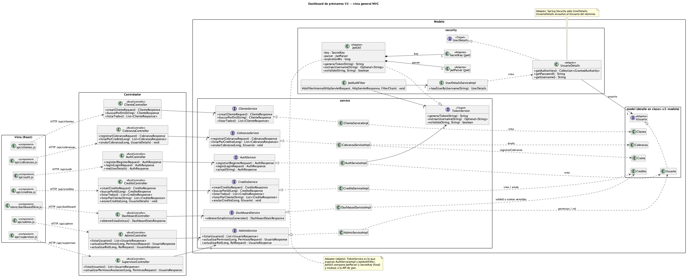
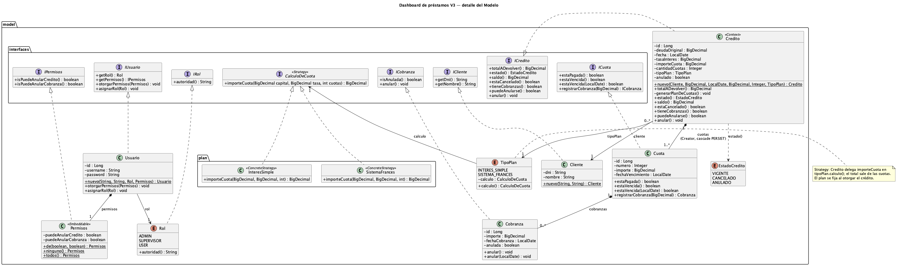

Dashboard de préstamos
TPO de Proceso de Desarrollo de Software, grupo 7. UADE, 2.º cuatrimestre 2026. Iteración 3: MVC + patrones
(entrega 13/10/2026). Las rutas Java son relativas a backend/src/main/java/com/uade/tpejemplo/;
las del front, a frontend/src/.
Qué es y actores
Sistema interno de una financiera para otorgar préstamos en cuotas a clientes y registrar el cobro de esas cuotas. El cliente no usa el sistema: lo opera personal interno. Backend Spring Boot 3.4 (Java 21, JPA, H2 en memoria, Spring Security con JWT); frontend React 19 + Redux Toolkit + Vite.
| Actor | Cómo nace | Qué puede hacer |
|---|---|---|
| Visitante | — | Registrarse y loguearse (/api/auth/**, config/SecurityConfig.java filterChain) |
Operador (USER) | Registro público: siempre USER con Permisos.ninguno() (service/impl/AuthServiceImpl.java registrar) | Clientes, créditos, cobranzas. Anular solo si tiene el permiso correspondiente |
Supervisor (SUPERVISOR) | config/DataInitializer.java o un ADMIN le cambia el rol | Lo del operador + dashboard + otorgar permisos de anulación (controller/SupervisorController.java) |
Administrador (ADMIN) | Solo config/DataInitializer.java | Cambiar rol USER↔SUPERVISOR, permisos, dashboard (controller/AdminController.java) |
Requerimientos funcionales vigentes
- Alta, listado y búsqueda por DNI de clientes.
- Otorgar un crédito eligiendo capital, fecha, tasa, cantidad de cuotas y tipo de plan (interés simple o sistema francés); el sistema genera el plan de cuotas.
- Listar créditos (todos o de un cliente) con estado (vigente, cancelado, anulado), saldo y cuotas pagadas, pendientes o vencidas.
- Registrar el cobro de una cuota y listar las cobranzas de un crédito.
- Anular cobranzas del día y créditos sin cobranzas vigentes, según permisos del usuario.
- Dashboard con totales de lo vigente para supervisor y administrador.
- Registro y login con JWT; gestión de roles (ADMIN) y de permisos de anulación (SUPERVISOR, ADMIN).
Reglas de negocio
Cada regla vive en quien tiene el dato (Information Expert). Las validaciones de forma van en los DTO de request.
| # | Regla | Dónde |
|---|---|---|
| R1 | El DNI del cliente es único | service/impl/ClienteServiceImpl.java crear |
| R2 | Capital > 0, tasa entre 0 y 999,99, al menos 1 cuota, tipo de plan obligatorio | dto/request/CreditoRequest.java |
| R3 | Interés simple: total = capital × (1 + tasa/100), cuota = total / N con redondeo HALF_UP a 2 decimales | model/plan/InteresSimple.java totalADevolver, importeCuota |
| R4 | Sistema francés: cuota = C·i / (1 − (1+i)−n), con i = tasa/100 por período; tasa 0 → C/N; total = cuota × N | model/plan/SistemaFrances.java importeCuota, totalADevolver |
| R5 | Plan de N cuotas numeradas 1..N, vencimiento fecha + i meses | model/Credito.java generarPlanDeCuotas |
| R6 | No se cobra sobre un crédito anulado | model/Cuota.java registrarCobranza |
| R7 | Una cuota tiene a lo sumo una cobranza vigente; las anuladas no cuentan | model/Cuota.java estaPagada, registrarCobranza |
| R8 | El importe cobrado tiene que ser exactamente el de la cuota (no hay pago parcial) | model/Cuota.java registrarCobranza |
| R9 | La fecha de la cobranza la pone el sistema (hoy) | model/Cobranza.java constructor |
| R10 | Solo se anulan cobranzas del día | model/Cobranza.java anular |
| R11 | No se anula un crédito ya anulado ni uno con cobranzas vigentes | model/Credito.java anular, tieneCobranzas |
| R12 | Una cuota está vencida si no está pagada y su vencimiento es anterior a hoy | model/Cuota.java estaVencida |
| R13 | Estado del crédito: ANULADO si se anuló; CANCELADO si todas las cuotas están pagas; si no, VIGENTE | model/Credito.java estado, estaCancelado |
| R14 | Saldo = suma de cuotas impagas; 0 si está anulado | model/Credito.java saldo |
| R15 | Anular un crédito requiere puedeAnularCredito; anular una cobranza, puedeAnularCobranza | service/impl/CreditoServiceImpl.java anularCredito; service/impl/CobranzaServiceImpl.java anularCobranza |
| R16 | Nadie otorga ni quita el rol ADMIN | service/impl/AdminServiceImpl.java actualizarRol |
| R17 | El registro crea siempre un USER sin permisos; username único | service/impl/AuthServiceImpl.java registrar |
| R18 | El dashboard cuenta solo créditos no anulados, financiado = suma de deuda original vigente, cobrado = cobranzas no anuladas | repository/CreditoRepository.java contarVigentes, sumarDeudaOriginalVigente; repository/CobranzaRepository.java sumarImporteVigente |
Casos de uso
Numeración de los docs V0 (03-casos-de-uso.puml), estado en V3.
| CU | Estado | Nota |
|---|---|---|
| UC01 Registrarse | implementado | |
| UC02 Iniciar sesión | implementado | Password incorrecta → 401 (M5) |
| UC03 Emitir token JWT | implementado | Es un mecanismo de UC01/UC02, no un CU |
| UC04 Registrar cliente | implementado | Sin modificación ni baja |
| UC05 Listar clientes | implementado | Sin paginación |
| UC06 Buscar cliente por DNI | solo backend | Sin vista |
| UC07 Otorgar crédito | implementado | Con tipo de plan (M9) |
| UC08 Generar plan de cuotas | implementado | Include de UC07 |
| UC09 Consultar crédito | solo backend | Sin vista |
| UC10 Listar créditos | implementado | Por cliente y general (GET /api/creditos) |
| UC11 Anular crédito | implementado | Permiso aplicado en backend (M4); ignora cobranzas anuladas (M8) |
| UC12 Eliminar crédito | retirado | Duplicaba UC11 salteando su regla |
| UC13 Registrar cobro | implementado | Rechaza crédito anulado (M1); no registra quién cobró |
| UC14 Listar cobranzas del crédito | implementado | |
| UC15 Anular cobranza | implementado | Permiso aplicado en backend (M4) |
| UC16 Ver estadísticas | implementado | Números corregidos (M3), también ADMIN (M10) |
| UC17 Administrar metas | retirado | Con MetaCobranza en V1 (Data class) |
| UC18 Listar usuarios | implementado | ADMIN ve todos menos ADMIN; SUPERVISOR ve todos |
| UC19 Asignar permisos de anulación | implementado | Desde V3 el backend los aplica (M4) |
| Cambiar rol de usuario (nuevo V2) | implementado | pages/PanelAdmin.jsx; falta en los docs V0 |
Arquitectura MVC
MVC distribuido, con la vista en el cliente: el @RestController devuelve JSON y la vista se arma en
el browser. El único contrato entre vista y controlador son los DTO.
| Componente | Paquetes |
|---|---|
| Modelo | model/, model/interfaces/, model/plan/, repository/, service/ + service/impl/, exception/BusinessException, exception/ResourceNotFoundException, config/DataInitializer |
| Controlador | controller/, dto/request/, dto/response/, exception/GlobalExceptionHandler, security/, config/SecurityConfig, config/OpenApiConfig |
| Vista | Frontend: pages/, components/, store/slices/, api/ (apiClient.js, único punto HTTP) |
Flujo de un request (anular un crédito):
pages/Creditos.jsxoculta el botón si el usuario no tiene el permiso y, si lo tiene, despacha el thunk que llama aapi/.security/JwtAuthFilter.javavalida el token víaservice/TokenServicey carga el usuario.config/SecurityConfig.javaexige autenticación para/api/creditos/**.controller/CreditoController.javaanularCreditotoma elUsuarioDetailsautenticado y llama al servicio.service/impl/CreditoServiceImpl.javaanularCreditopregunta aPermisosy le pide alCreditoque se anule (model/Credito.javaanular).- Si algo falla,
exception/GlobalExceptionHandler.javatraduce:BusinessException→ 400,AccessDeniedException→ 403,ResourceNotFoundException→ 404.

docs/diagramas/clases-v3-general.png, fuente clases-v3.puml)Modelo de dominio

docs/diagramas/clases-v3-modelo.png)Estados del crédito
model/EstadoCredito.java: VIGENTE, CANCELADO, ANULADO. Se
calcula, no se persiste: model/Credito.java estado mira el boolean anulado
y sus cuotas. El crédito es agregado de sus cuotas (@OneToMany lazy, ordenado por número) y
responde saldo, estaCancelado, tieneCobranzas y puedeAnularse
(M8).
Strategy de cálculo
| Rol | Clase |
|---|---|
| Context | model/Credito.java (constructor y totalADevolver delegan) |
| Strategy | model/interfaces/CalculoDeCuota.java |
| ConcreteStrategy | model/plan/InteresSimple.java, model/plan/SistemaFrances.java |
| Selección | model/TipoPlan.java (enum persistido, calculo()); viene en CreditoRequest.tipoPlan |
Adapter de seguridad
| Rol | Token (nuevo en V3) | Usuario (desde V1) |
|---|---|---|
| Target | service/TokenService.java | UserDetails de Spring Security |
| Adapter | security/JwtUtil.java | security/UsuarioDetails.java |
| Adaptee | librería jjwt | model/interfaces/IUsuario.java |
| Client | service/impl/AuthServiceImpl.java, security/JwtAuthFilter.java | DaoAuthenticationProvider vía security/UserDetailsServiceImpl.java |
API
19 endpoints en 7 controllers bajo /api: auth, clientes, créditos, cobranzas, dashboard, admin y
supervisor. Con el backend levantado: Swagger en
http://localhost:8080/swagger-ui.html (botón Authorize con el
token de /api/auth/login), especificación en /v3/api-docs. Mapa completo
(método, ruta, controller, DTO, roles, códigos) en docs/trabajo/api.md.
Códigos: 400 regla de negocio o validación, 401 sin token o credenciales malas, 403 sin rol o permiso, 404 no
existe, 405 método no soportado (exception/GlobalExceptionHandler.java). Todos los errores salen
con dto/response/ErrorResponse.java.
Seguridad
- JWT: login y registro devuelven un token (
security/JwtUtil.java, expira en 24 h segúnjwt.expiration-ms).security/JwtAuthFilter.javalo valida en cada request. Sesión stateless. - Roles (
config/SecurityConfig.javafilterChain):/api/auth/**y Swagger públicos;/api/admin/**solo ADMIN;/api/supervisor/**solo SUPERVISOR;/api/dashboard/**SUPERVISOR o ADMIN; el resto, cualquier autenticado. - Permisos de anulación (
model/Permisos.java):puedeAnularCreditoypuedeAnularCobranza, por usuario. Los aplica el servicio (R15); el front solo oculta botones. - Sin token → 401 (
HttpStatusEntryPoint); con token y sin permiso → 403.
Cómo levantarlo en local
Requiere JDK 21, Maven y Node.
cd backend && mvn spring-boot:run # http://localhost:8080, H2 en memoria
cd frontend && npm install && npm run dev # Vite, proxy /api → localhost:8080
La base es H2 en memoria: se pierde al reiniciar. Consola en /h2-console (JDBC
jdbc:h2:mem:tpdb, usuario sa, sin password).
| Usuario | Password | Rol | Permisos |
|---|---|---|---|
admin | admin | ADMIN | todos |
supervisor | supervisor | SUPERVISOR | todos |
user | user | USER | ninguno |
Fuente: config/DataInitializer.java run.
Cómo se verifica
- Tests:
cd backend && mvn test. 24 tests unitarios de dominio (JUnit 5 + AssertJ, sin Spring) enbackend/src/test/java/com/uade/tpejemplo/model/:CreditoTest,CuotaTest,CobranzaTest,plan/InteresSimpleTest,plan/SistemaFrancesTest, máscontextLoads. Detalle y lo que falta cubrir:docs/trabajo/tests.md. - Smoke: backend levantado y probado con curl, caso por caso contra M1..M10 (códigos, cálculo de cuotas, anulaciones, permisos, dashboard):
docs/trabajo/smoke.md. El build del front no se probó ahí.
Decisiones de diseño
| Decisión | Por qué |
|---|---|
Reglas en las entidades (Cuota.registrarCobranza, Cobranza.anular, Credito.anular) | Information Expert: decide quien tiene el dato. Desde V1/V2. |
| Interfaces de servicio colapsadas en V1 y restituidas en V2 | V1 las sacó por Lazy class (una sola impl). V2 las volvió a poner como convención fijada por la cátedra. Revierte el informe 1 §3.7. |
Interfaz por cada clase de model/ (model/interfaces/) | Pedido de la cátedra en V2. Los DTO de respuesta y UsuarioDetails consumen la interfaz. IRol no tiene consumidor. |
MetaCobranza eliminada (V1) | Data class sin uso real; UC17 retirado. |
| Sistema francés descartado en V2 y reabierto en V3 | El 15/09 se descartó (no se buscaba polimorfismo). En V3 entra como segunda estrategia real para que Strategy no quede con una sola implementación (M9). |
Credito como agregado de sus cuotas, con estado calculado (M8) | Saca la consulta al repositorio de anularCredito y corrige que se contaran cobranzas anuladas (absorbe M2). Carga con fetch explícito para no caer en N+1. |
| Permisos validados en el servicio con el usuario autenticado (M4) | En MVC la vista oculta pero el modelo decide. Costo: el servicio queda acoplado a IUsuario. |
JwtUtil detrás de TokenService (M7) | Los clientes de auth dejan de depender de jjwt. Una sola implementación: es frontera con una librería, no polimorfismo. |
| Dashboard también para ADMIN (M10) | Cierra TPO-010. Pendiente confirmar con Regulo. |
| React + REST como MVC | MVC separa componentes, no clases: la vista es una pieza aparte y se comunica por DTO. |
Historia V0 → V3
- V0 (
main@2a90af8): proyecto inicial con docs PlantUML, requerimientos y CU. - V1 (
andrei-iteracion1@86c75cc, 08/09): bad smells;Permisos,Cuotacon importe y su cobranza, tasa de interés, panel de supervisor. - V2 (
main@45e228c, tagv2, 15/09): GRASP + interfaces de modelo y de servicio. - V3 (este repo, entrega 13/10): MVC + Strategy + Adapter; bugs TPO-001..004, 007, 010 cerrados; tests de dominio; Swagger.
Pendientes y bugs abiertos
- TPO-009:
jwt.secretenbackend/src/main/resources/application.properties, en un repo público. - TPO-008:
/h2-console/**enweb.ignoring()y enpermitAll()(config/SecurityConfig.java). - TPO-014: el paquete
com.uade.tpejemployTpEjemploApplicationno nombran el sistema. - TPO-012: smells del frontend, fuera de alcance por decisión.
- Trazabilidad:
Cobranzano sabe quién cobró ni quién anuló;Creditono sabe quién lo otorgó. Cobranza.anularno rechaza una cobranza ya anulada (model/Cobranza.java).AdminServiceImpl.actualizarPermisosno impide cambiar los permisos de un ADMIN; solo lo bloquea el front (pages/GestorPermisos.jsx).- La fecha del crédito es libre: acepta pasado y futuro (
dto/request/CreditoRequest.java). - Interés simple: la suma de cuotas puede diferir del total en centavos (
docs/trabajo/tests.md). - Tests sin cubrir: controllers, seguridad, queries del dashboard, anulación de cobranza de otro día (falta un
Clockinyectable). - Backlog GRASP:
TasaInterescomo value object. - Confirmar con Regulo que ADMIN debe ver el dashboard (M10).
- UC06 y UC09 sin vista en el front.